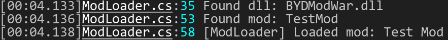
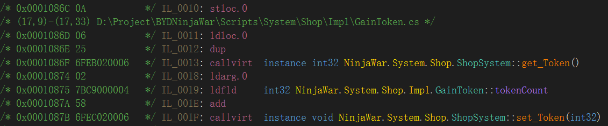
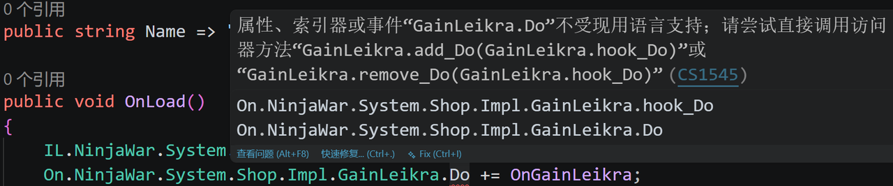
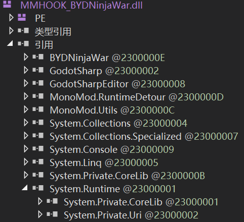

序：什么是MonoMod
MonoMod是一个为程序提供Mod接口的工具链，包含了IL Editing，RuntimeDetour等功能。这里主要介绍MonoMod的HookGen功能，即为每一个函数提供Hook接口以供外部Mod拦截或修改。
由于MonoMod是一个基于Net5.0的项目，导致在高版本项目中需要做一些适配。
准备：程序集加载
Mod的核心是一个dll文件，需要能够动态加载，动态卸载。
在C#中，加载dll很简单，让我们看以下的例子：
var asm = Assembly.LoadFrom(dllPath);
var modTypes = asm.GetTypes().Where(t => typeof(IMod).IsAssignableFrom(t) && !t.IsInterface && !t.IsAbstract);
foreach (var type in modTypes)
{
Log.I($"Found mod: {type.Name}");
if (Activator.CreateInstance(type) is IMod mod)
{
mod.OnLoad();
LoadedMods.Add(mod);
Log.I($"[ModLoader] Loaded mod: {mod.Name}");
}
}
接下来做一个最简单的mod示例，新建一个类库项目并引用游戏的dll文件，然后做一个什么都不干的IMod实例：
public class TestMod : IMod
{
public string Name => "Test Mod";
public void OnLoad() { }
public void OnUnload() { }
}
启动游戏，mod程序集可以被加载了：

怎么用：指南
生成MMHOOK_XXX.dll
首先你需要找到MonoMod的Release：https://github.com/MonoMod/MonoMod/releases/tag/v22.07.31.01，然后解压到一个合适的，能够被很方便地引用的路径。然后修改MonoMod.RuntimeDetour.HookGen.runtimeconfig.json这个文件，将其中的框架改为你需要的net版本。
"tfm": "net5.0", // -> net8.0
"framework": {
"name": "Microsoft.NETCore.App",
"version": "5.0.0" // -> 8.0.xxx
}
每次Build需要做以下几件事：
-
将Mod项目需要的程序集引用复制到一个相对稳定的文件夹供Mod项目引用
-
使用MonoMod.RuntimeDetour.HookGen.exe生成On/IL Hook程序集
-
将Hook程序集复制回到引擎启动游戏的临时路径（比如Godot中的.godot/mono/temp/bin/Debug）
对应的自动化BuildTask如下：
<Target Name="PublishModSDK" AfterTargets="Build">
<MakeDir Directories="$(SDKDir)" Condition="!Exists('$(SDKDir)')"/>
<Copy SourceFiles="$(TargetPath)" DestinationFolder="$(SDKDir)" SkipUnchangedFiles="true"/>
<!-- 生成Hook程序集 -->
<Exec Command=""$(HookGenExe)" "$(SDKDir)BYDNinjaWar.dll""
WorkingDirectory="$(SDKDir)"/>
<!-- 后处理Hook程序集 -->
<Exec Command="dotnet run --project "$(ProjectDir)Tools\FixHookGen\FixHookGen.csproj" -- "$(SDKDir)MMHOOK_BYDNinjaWar.dll"" />
<Copy SourceFiles="$(SDKDir)MMHOOK_BYDNinjaWar.dll" DestinationFolder="$(TargetDir)" SkipUnchangedFiles="true"/>
<Copy SourceFiles="$(ProjectDir)BYDNinjaWar.targets" DestinationFolder="$(SDKDir)" SkipUnchangedFiles="true"/>
</Target>
Mod项目模板
对于Mod项目而言，最好创建一个项目模板，会减少配置的过程，具体而言就是制作一个targets文件，然后供Mod项目引用，在这之后你的Mod项目从创建到配置将会非常简单。
在控制台中运行dotnet new classlib -n BYDModWar，然后修改csproj文件引用targets文件即可：
<Project Sdk="Microsoft.NET.Sdk">
<Import Project="..\BYDNinjaWar\ModSDK\BYDNinjaWar.targets" />
</Project>
targets文件的内容包括对必要程序集的<Reference>，以及项目框架、输出等约束，最后再加上一个自动复制到加载Mod的目录当中。比如：
<Target Name="DeployMod" AfterTargets="Build">
<MakeDir Directories="$(NinjaWarModsDir)" Condition="!Exists('$(NinjaWarModsDir)')"/>
<Copy SourceFiles="$(TargetPath)"
DestinationFolder="$(NinjaWarModsDir)"
SkipUnchangedFiles="true"/>
<Copy SourceFiles="$(TargetDir)$(TargetName).pdb"
DestinationFolder="$(NinjaWarModsDir)"
SkipUnchangedFiles="true"
Condition="'$(Configuration)' == 'Debug' AND Exists('$(TargetDir)$(TargetName).pdb')"/>
</Target>
Core：On/IL Hook
有的时候，我们需要修改原版函数，那么就需要提供一个Hook接口能够动态的拦截原版函数，或者从IL的层面去编辑原版函数。MonoMod给出了一个方便的Hook生成工具HookGen，它会自动根据你的dll去生成每一个函数的On Hook和IL Hook，前者是拦截，后者是编辑。
On Hook
先说On Hook，有的时候，我们需要拦截原版函数，对其做出条件判断，或者根据其执行情况再额外执行逻辑。这个时候我们就需要对原版函数的调用进行操控，做法就是嵌套On Hook。嵌套On Hook对于每一次注册，都会将实际执行的函数替换为传进来的函数，而传进来的函数的形式长什么样呢，举个例子：
public partial class GainLeikra : ItemEffect
{
[Export] private int leikraCount;
public override void Do()
{
var sys = MainProgram.I.CombatContext.EquipSystem;
sys.TotalLeikra += leikraCount;
}
}
假如我们想拦截这个函数，让其只有一半的概率触发，那么对应的Hook函数如下：
public static void OnGainLeikra(On.NinjaWar.System.Shop.Impl.GainLeikra.orig_Do orig, GainLeikra self)
{
ModLogger.Log("Half chance");
orig.Judge(0.5f)?.Invoke(self);
}
On.NinjaWar.System.Shop.Impl.GainLeikra.Do += OnGainLeikra;
Do函数的调用参数是GainLeikra(this隐藏)，而Hook函数需要包含Do函数的所有参数，同时加上一个和Do函数本身签名一致的回调orig。如果orig有返回值，那么这个返回值也可以被利用于执行额外的逻辑。
换句话说On Hook形成了一个拦截调用链，后注册的函数能够决定先注册的函数能否被调用，以及返回结果如何被利用，而第一个“注册”的函数就是原版函数
IL Hook
再说IL Hook，有的时候，我们只需要修改原版函数的一点小小的逻辑，如果使用On Hook需要把原版函数复制一遍。这个时候我们就需要直接修改原版函数，做法就是IL-Editing，也就是修改原版代码生成的IL中间语言。先看一个示例，这里的道具效果是：“获取X点代币”，目标是改成“获取X*2点代币”。以下是IL代码：

可以看出，我们需要在IL_0019: ldfld这一行之后插入一个*2的逻辑，那么我们需要首先定位到这一行，然后插入需要的IL代码。MonoMod.Cil和Mono.Cecil.Cil提供了方便快捷的IL-Editing工具，可以让我们像读写文件一样修改IL代码，实现如下：
public void ILToken(ILContext ctx)
{
var c = new ILCursor(ctx);
//定位
if (c.TryGotoNext(MoveType.After, i => i.OpCode == OpCodes.Ldfld))
{
//修改
c.Emit(OpCodes.Ldc_I4_2);
c.Emit(OpCodes.Mul);
}
}
给出越详细的上下文，定位就更准确，这一点对于大型函数定位尤其重要，为了避免误伤无关的代码，我们可能需要将要修改处代码的前后文一并作为GotoNext的判据。这里由于函数比较简单，就直接匹配操作码为ldfld的这一行。
至于具体怎么操作IL代码，我相信AI的能力肯定足够用来帮你写了。
后处理：热(冷)修复
报错
当你急头白脸地打开Mod项目，想要进行一个一个一个的写的时候，你会发现一个报错：

欸，文档上就是这么写的，如果你尝试编译，你会发现一个更加神秘的报错：
error CS0012: 类型“MulticastDelegate”在未引用的程序集中定义。必须添加对程序集“System.Private.CoreLib, Version=8.0.0.0, Culture=neutral, PublicKeyToken=7cec85d7bea7798e”的引用。
这里就涉及到C# dotnet对于dll文件的管理了，在dotnet中，程序集分为两类，“类似”于头文件和c文件之间的关系。Private字面意思就是不应该被直接引用的程序集，它是System.Runtime中定义的API的实现，使用CLR内部类型，内部实现可变。在启动时，会自动根据System.Runtime的引用来加载对应的System.Private.XXX.dll。
使用dnSpy查看生成的Hook程序集，发现问题出在根引用下出现了一个重复的System.Private.CoreLib，它本来应该呆在System.Runtime的下面。

如果强行提供一个System.Private.CoreLib，会出现重复定义的问题，因为Runtime下面的dll是一定会被加载的。那么解决方案就显而易见了，我们需要修改dll文件，来去掉这一个引用，同时将使用了该dll的变量类型重定向。
冷修复
在原版项目下建立一个子项目，弄一个修复脚本来后处理Hook程序集，然后把这个脚本加入项目的BuildTask中。读取程序集之后，我们可以利用Mono.Cecil工具来编辑。
大致要做的事情有：
-
确保存在System.Runtime根引用，如果没有就手动加入，以及根目录下面没有System.Private.CoreLib，没有就不用处理了
-
将所有引用了根CoreLib中的类型引用（TypeReference）修改为引用System.Runtime，这样运行时就会自动重定向
-
删掉根System.Private.CoreLib引用
至此冷修复完成，现在Hook程序集能够被正常的引用。参考：
// 读取程序集
using var asm = AssemblyDefinition.ReadAssembly(mmhookPath, readerParams);
var module = asm.MainModule;
// Step 1
var privateCorLib = module.AssemblyReferences.FirstOrDefault(r => r.Name == "System.Private.CoreLib");
if(privateCorLib == null) return;
var runtimeRef = module.AssemblyReferences.FirstOrDefault(r => r.Name == "System.Runtime");
runtimeRef = new AssemblyNameReference("System.Runtime", new Version(8, 0, 0, 0))
{
PublicKeyToken = new byte[] { 0xb0, 0x3f, 0x5f, 0x7f, 0x11, 0xd5, 0x0a, 0x3a }
};
module.AssemblyReferences.Add(runtimeRef);
// Step 2
foreach (var typeRef in module.GetTypeReferences()) FixScope(typeRef, runtimeRef);
foreach (var memberRef in module.GetMemberReferences()) FixTypeRefRecursive(memberRef.DeclaringType, runtimeRef);
FixAllTypes(module.Types, runtimeRef);
// Step 3
var toRemove = module.AssemblyReferences.Where(r => r.Name == "System.Private.CoreLib").ToList();
foreach (var r in toRemove) module.AssemblyReferences.Remove(r);
// 修复单个引用的函数，需要额外的递归的函数来处理所有可能的引用
private static void FixScope(TypeReference typeRef, AssemblyNameReference runtimeRef)
{
if (typeRef.Scope is AssemblyNameReference scope && scope.Name == "System.Private.CoreLib")
typeRef.Scope = runtimeRef;
}